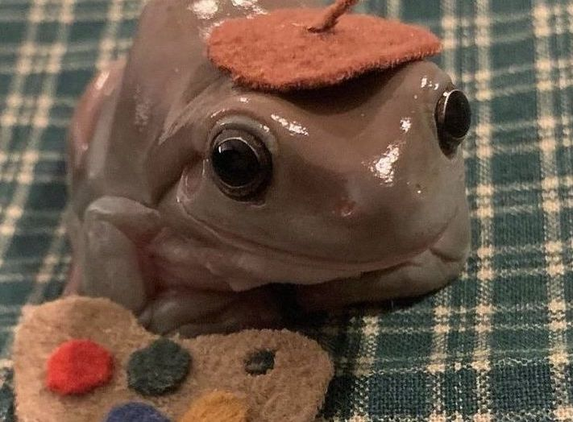

|
Hello my name is James Taylor! no, not the famous James Taylor to the left, but rather a normal college student that goes to NKU. I have created this webpage to showcase a couple of my favorite things. These things are... My car, my beatiful bright yellow Kia Soul, my favorite pokemon Bulbasaur, and my very own frog named Albert. As you click through the pages it will inform about these things. You will learn to love the things that I love!!!!!!!!! Without further interuption... |